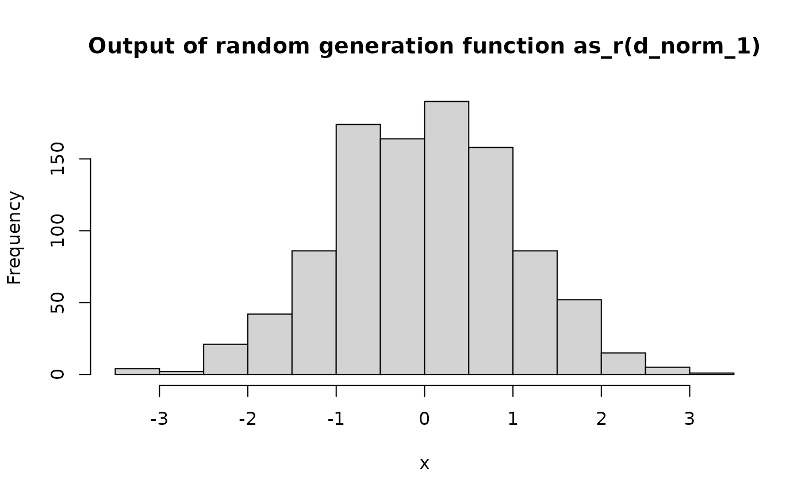

# S3 method for p
plot(x, y = NULL, n_extra_grid = 1001, ...)
# S3 method for d
plot(x, y = NULL, n_extra_grid = 1001, ...)
# S3 method for q
plot(x, y = NULL, n_extra_grid = 1001, ...)
# S3 method for r
plot(x, y = NULL, n_sample = 1000, ...)
# S3 method for p
lines(x, n_extra_grid = 1001, ...)
# S3 method for d
lines(x, n_extra_grid = 1001, ...)
# S3 method for q
lines(x, n_extra_grid = 1001, ...)| x | Pdqr-function to plot. |
|---|---|
| y | Argument for compatibility with |
| n_extra_grid | Number of extra grid points at which to evaluate
pdqr-function (see Details). Supply |
| ... | Other arguments for |
| n_sample | Size of a sample to be generated for plotting histogram in case of an r-function. |
Output of invisible() without arguments, i.e.
NULL without printing.
Main idea of plotting pdqr-functions is to use plotting mechanisms for appropriate numerical data.
Plotting of type discrete functions:
P-functions are plotted as step-line with jumps at points of "x" column of "x_tbl" metadata.
D-functions are plotted with vertical lines at points of "x" column of "x_tbl" with height equal to values from "prob" column.
Q-functions are plotted as step-line with jumps at points of "cumprob" column of "x_tbl".
R-functions are plotted by generating sample of size n_sample and calling
hist() function.
Plotting of type continuous functions:
P-functions are plotted in piecewise-linear fashion at their values on
compound grid: sorted union of "x" column from "x_tbl" metadata and sequence
of length n_extra_grid consisting from equidistant points between edges of
support. Here extra grid is needed to show curvature of lines between "x"
points from "x_tbl" (see Examples).
D-functions are plotted in the same way as p-functions.
Q-functions are plotted similarly as p- and d-functions but grid consists
from union of "cumprob" column of "x_tbl" metadata and equidistant grid of
length n_extra_grid from 0 to 1.
R-functions are plotted the same way as type "discrete" ones: as histogram
of generated sample of size n_sample.
Other pdqr methods for generic functions:
methods-group-generic,
methods-print
# Usage of `n_extra_grid` is important in case of "continuous" p- and
# q-functions
simple_p <- new_p(data.frame(x = c(0, 1), y = c(0, 1)), "continuous")
plot(simple_p, main = "Case study of n_extra_grid argument")